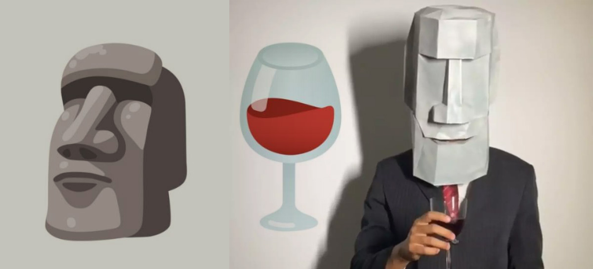
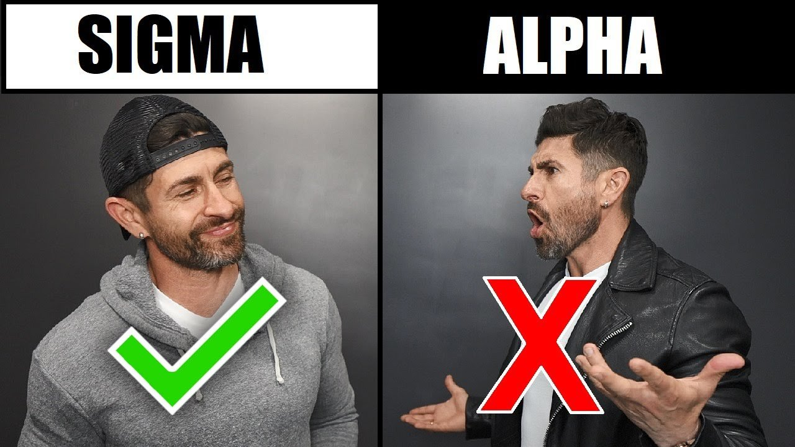

Sigmas e sua ascensão
Este é um exemplo de um site simples para sua explicação em sala de aula, tendo como base aprender o básico sobre o sites. Conheça nesse site simples um pouco mais sobre os famosos sigmas que tanto fazem sucesso nas redes sociais.
Esta imagem é uma representação de moai no estilo sigma, Os moais são megálitos construídos pelos Rapa Nui na Ilha de Páscoa. Essas construções megalíticas apresentam formas humanoides e foram espalhadas por toda a ilha. Acredita-se que tenham sido construídas entre os anos de 1400 e 1650. Atualmente existem cerca de 1000 moais e alguns outros que ficaram inacabados.
Como identificar Sigmas?

O "homem sigma" seria um tipo de personalidade masculina. De acordo com a trend, o termo “sigma” diz respeito a um conceito emergente, que engloba homens que possuem muitas das características "alfa", mas têm o diferencial de serem mais introvertidos e não chamarem tanta atenção.
Assim, segundo a trend, muitas vezes eles incorporariam a mentalidade de “lobos-solitários”, preferindo estar sozinhos, seguindo seus próprios caminhos. Além dessa independência, eles ainda apresentariam outras qualidades fortes, como confiança, autenticidade e a fuga dos padrões impostos pela sociedade. Normalmente, os sigmas também não se abrem para qualquer pessoa, não sentindo necessidade de compartilhar informações pessoais, e são exigentes com a própria rotina, não tendo muita compatibilidade com pessoas controladoras.
Para as mulheres o significado do termo é semelhante: designa uma mulher com características “alfa”, mas que também não deixa de lado a introversão e pensamentos mais profundos. Da mesma forma que sua versão masculina, não deseja seguir padrões e vive com confiança. Além disso, elas seriam leais, inteligentes e racionais.
Exemplos de sigmas:
Rafael Aires, criador de páginas famosas no Facebook e Instagram como: @sejahomem. oficial, @saberdoslobos e @condutavaliosa. Ajuda as pessoas através das redes sociais desde 2011. Ao todo, seus perfis somam mais de 4,6 MILHÕES de seguidores.
Gigachad significa um homem cujo tem um corpo tônico que é usado como exemplo para os homens. O gigachad é um meme que vem normalmente acompanhado da música "can you feel my heart" e também algo como "oque meninos gostam, oque homens gostam".